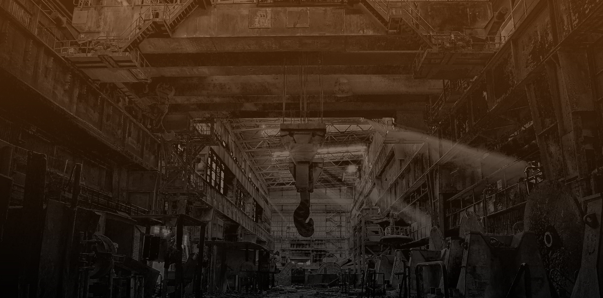

Anahtar Teslimi Projeler
Anahtar Teslimi Projeler
Son yıllarda firmalar uzmanlaşmanın ulaştığı ileri aşamadan faydalanarak işletmeleriyle ilgili birçok konuda dışarıdan destek almakta (outsource) ve asıl işlerine odaklanarak bilgilerinin yetersiz olduğu konularda zaman kaybetmekten kurtulmaktadırlar. İnşaat da uzmanlığın çok önemli olduğu, tüm alanları ciddi bir teknik altyapı ve tecrübe isteyen bir konudur. Son yıllarda birçok firma bu konu ile ilgili tek tek her aşamasında teklifler alıp, her bir aşama hakkında bilgi edinmek yerine anahtar teslim hizmet veren tek bir taahhüt ve proje firmasına işi teslim edip büyük bir yükten kurtulmaktadırlar.
Son yıllarda firmalar uzmanlaşmanın ulaştığı ileri aşamadan faydalanarak işletmeleriyle ilgili birçok konuda dışarıdan destek almakta (outsource) ve asıl işlerine odaklanarak bilgilerinin yetersiz olduğu konularda zaman kaybetmekten kurtulmaktadırlar. İnşaat da uzmanlığın çok önemli olduğu, tüm alanları ciddi bir teknik altyapı ve tecrübe isteyen bir konudur. Son yıllarda birçok firma bu konu ile ilgili tek tek her aşamasında teklifler alıp, her bir aşama hakkında bilgi edinmek yerine anahtar teslim hizmet veren tek bir taahhüt ve proje firmasına işi teslim edip büyük bir yükten kurtulmaktadırlar.
Neden Anahtar Teslimi Projeleri Seçmelisiniz?
Proko Yapı Endüstrisi uzun yıllara dayanan tecrübesi, birçok işte değerlendirerek seçtiği çözüm ortakları ve sunduğu müşteri odaklı hizmet ile anahtar teslim proje ihtiyaçlarınızda kaliteli, uygun fiyatlı ve hızlı sonuçlar sunmaktadır.